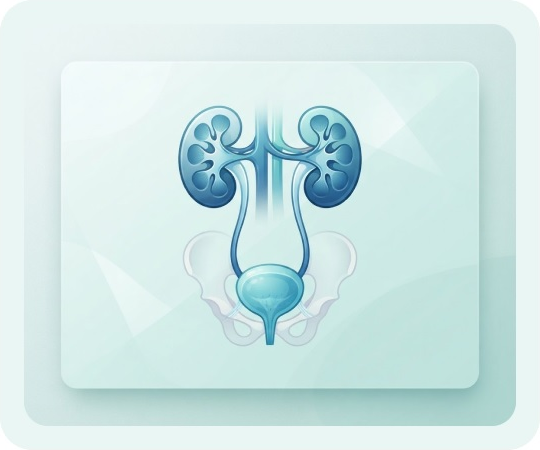

Cuida tus riñones con señales claras y seguimiento clínico oportuno
NefroGuía te ayuda a prevenir complicaciones de la pielonefritis, correlacionar tus hábitos de hidratación, registrar síntomas de alarma y mantener una comunicación estructurada con tu equipo médico tratante.

¿Cuándo buscar atención médica inmediata?
No esperes a completar registros si notas alguna de estas señales críticas. Si tienes dudas, recurre inmediatamente al teléfono de emergencias o acude a un centro asistencial.
Urgencias inmediatas (Llama al 131 o 911)
Acude de urgencia y no te traslades conduciendo tú mismo si presentas:
- Confusión, somnolencia marcada o desorientación nueva
- Dificultad respiratoria o respiración acelerada
- Desmayo, pérdida de conocimiento o debilidad extrema
- Vómitos continuos que impiden beber líquidos o tomar el antibiótico
- Embarazo con fiebre alta o dolor lumbar agudo
• Chile: 131 (SAMU) · 600 360 7777 (Salud Responde MINSAL)
Valoración el mismo día
Requiere consulta médica presencial hoy mismo para examen y urocultivo:
- Fiebre de 38 °C o más, con o sin escalofríos con temblor
- Dolor agudo en el costado, flanco o espalda baja (zona renal)
- Sangre visible en la orina (hematuria)
- Antecedente de cálculos urinarios o litiasis con síntomas urinarios
- Sin mejoría tras 48 horas de haber iniciado antibiótico prescrito
Cómo funciona la plataforma NefroGuía
Registro y Factores de Riesgo
Ficha estructurada en 5 pasos que evalúa comorbilidades (diabetes, litiasis, ERC, embarazo), recurrencias previas y límites de ingesta hídrica.
Chequeo Diario y Semáforo
Monitoreo de temperatura, dolor lumbar EVA, micciones, tolerancia gastrointestinal y glucemia capilar en diabéticos en menos de dos minutos.
Priorización Clínica (Triage)
Panel para profesionales que ordena a los pacientes según riesgo objetivo, estado de urocultivos y adherencia al tratamiento prescrito.
¿Eres profesional de salud o paciente en seguimiento?
Accede a las herramientas de visualización de datos locales, reportes clínicos descargables y guías preventivas.